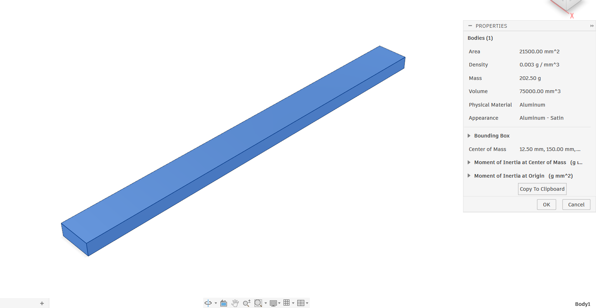
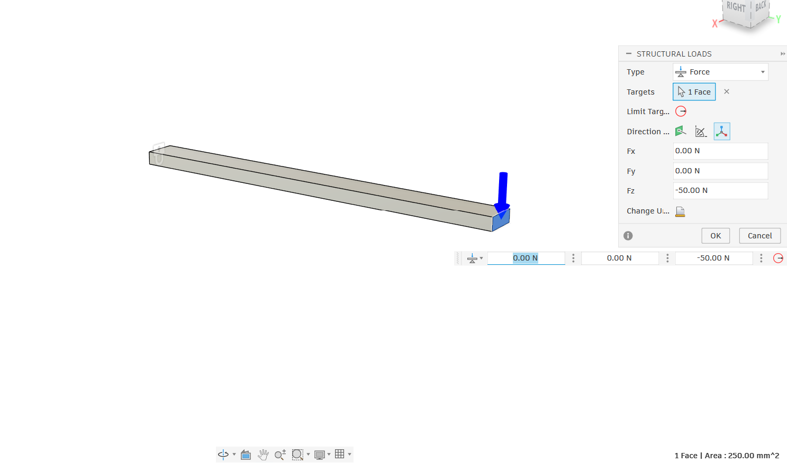
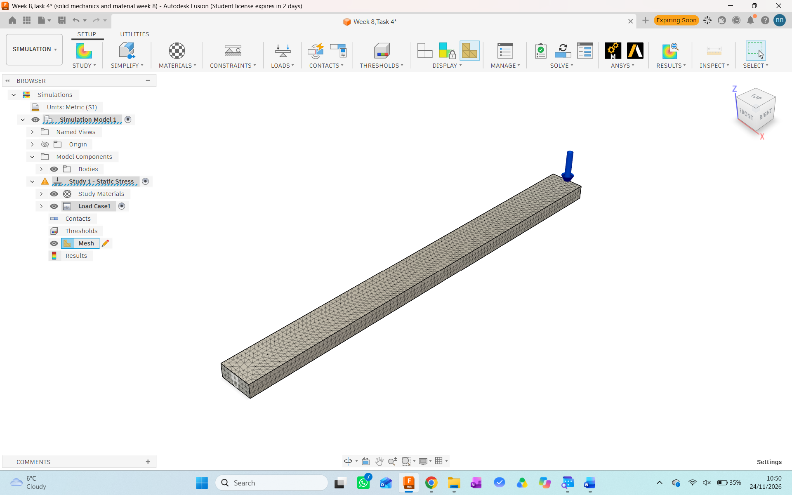
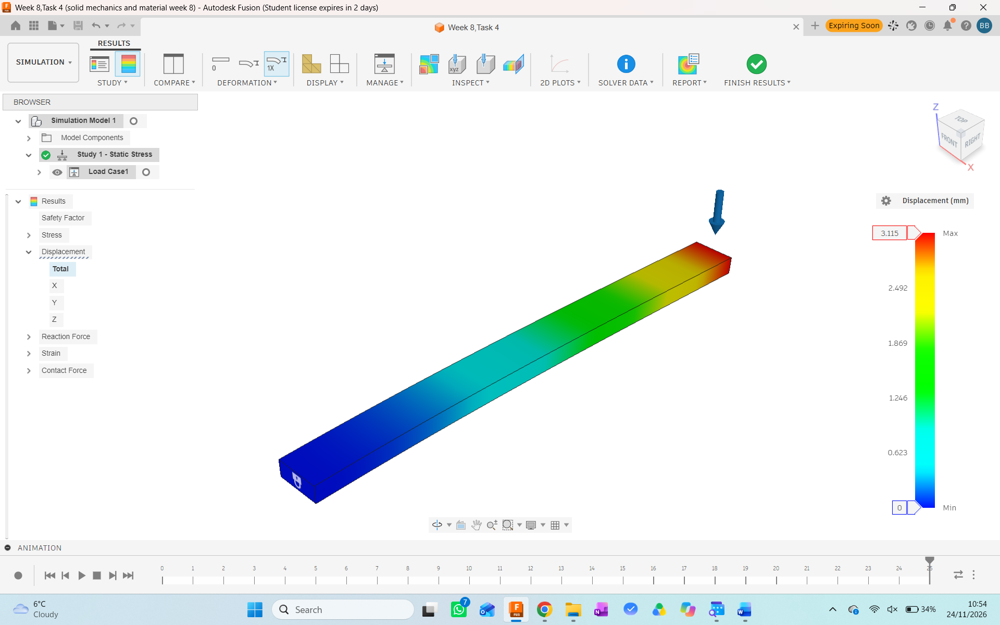
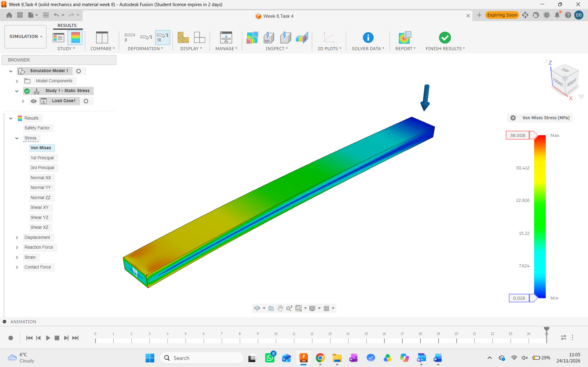
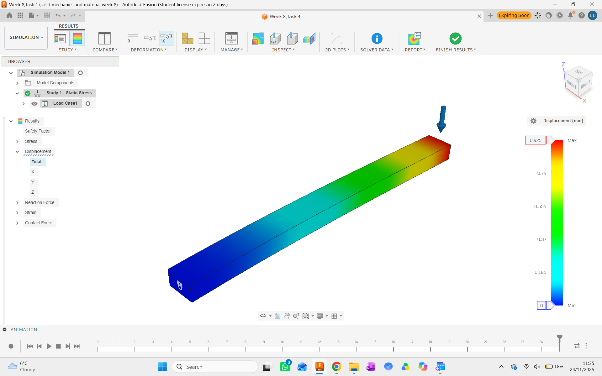

Cantilever Beam Bending Analysis
I modelled a 300 mm aluminium cantilever under a 50 N end load. I checked the predicted tip movement against beam theory, refined the mesh to test the stress near the support, and compared four beam depths.
Model and analysis setup
Geometry and material
- Aluminium beam with a 300 mm span and 25 mm width
- Baseline depth of 10 mm and analytical Young’s modulus of 68.9 GPa
- Depths of 8, 10, 12 and 15 mm compared under the same load
Boundary conditions and mesh
- All three translations restrained on the root face
- 50 N distributed across the opposite face in the negative Z direction
- Four mesh sizes from 10.0 to 1.5 mm, with 3.0 mm selected for the depth comparison
Results and mechanical interpretation
Which result stabilised as the mesh was refined?
At 3.0 mm, the predicted vertical deflection was 3.114 mm, 0.67% below the analytical value. Halving the mesh size increased the element count from 14,400 to 122,400 and changed vertical deflection by just 0.047%. Over the same step, peak von Mises stress rose from 34.763 to 38.008 MPa.
How much does a deeper beam help?
Increasing depth from 10 to 15 mm reduced total tip movement from 3.115 to 0.925 mm, a 70.3% reduction for a 50% increase in mass. At fixed width, the second moment of area grows with the cube of the depth.
Fusion 360 evidence





